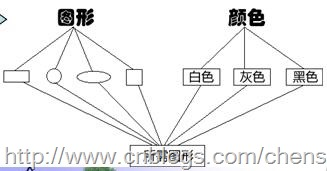

When I first started learning Java, when the teacher talked about inheritance, they always liked to use an example to explain it, and that was drawing. Here we have a brush that can draw squares, rectangles, and circles (everyone knows how to do this, so I won't explain). But now we need to color these shapes, and there are three colors: white, gray, and black. Here we can draw 3*3=9 shapes: white squares, white rectangles, white circles... At this point, we almost know that there are two solutions:
- Solution 1: Provide various color versions for each shape.
- Solution 2: Combine colors and shapes according to actual needs.
If we use Solution 1 to implement, can we also understand it this way? Provide various shape versions for each color? This is completely possible. As follows:

For the two shapes in Solution 1, we all clearly understand this problem: if we add an ellipse, do we have to add three more colors? If we add a green color, we have to add four more shapes. Continue adding. Continue adding... Every addition will increase a number of classes (if a color is added, classes equal to the number of shapes are added; if a shape is added, classes equal to the number of colors are added). I think no programmer would want this! So let's look at Solution 2. The solution provided by Solution 2 is: provide two parent classes, one for color and one for shape. Both the color parent class and the shape parent class contain corresponding subclasses, and then combine colors and shapes as needed.

For situations with several changing dimensions, we generally use Solution 2 to implement. In addition to reducing the number of classes in the system, it also facilitates system expansion. The application of Solution 2 is called the Bridge Pattern.

1. Pattern Definition
The Bridge Pattern separates the abstraction from its implementation so that they can both change independently.
The Bridge Pattern converts inheritance relationships into association relationships. It reduces the coupling between classes, reduces the number of classes in the system, and reduces the amount of code.
The sentence "separate the abstraction from its implementation" is not easy to understand. In fact, this is not about separating an abstract class from its derived classes, but rather about the abstract class and its derived classes using their own objects to implement. If you still cannot understand it, let us first understand what abstraction, implementation, and decoupling are.
Abstraction:Its concept is the action or process of extracting one or several characteristics from a complex object while paying attention only to other characteristics. In object-oriented programming, it is the process of extracting the common properties of objects to form a class.
Implementation:The concrete implementation given for the abstraction. It is an inverse process to abstraction; implementation is a further concretization of abstract things.
Decoupling:Decoupling is to free the coupling between abstraction and implementation, or to change the strong relationship between them into a weak relationship, and to change the inheritance relationship between the two roles into an association relationship.
As for that sentence: "separate the abstraction from its implementation," applying it in *Big Talk Design Patterns*, it means that the implementation system may have multiple classification angles, and each angle may change. Then separate these multi-angle classifications so that they change independently, reducing the coupling between them.
The so-called decoupling in the Bridge Pattern means using an association relationship (composition or aggregation relationship) between abstraction and implementation in a software system instead of an inheritance relationship, so that the two can change relatively independently. This is the intent of the Bridge Pattern.
2. Pattern Structure
The following figure is the UML structure diagram of the Bridge Pattern:

The Bridge Pattern mainly includes the following roles:
- Abstraction: Abstract class.
- RefinedAbstraction: Refined abstraction.
- Implementor: Implementor interface.
- ConcreteImplementor: Concrete implementor.
3. Pattern Implementation
For the pattern scenario, we use the drawing example. Its UML structure diagram is as follows:
 First is the shape class: this class is an abstract class that mainly provides a method for drawing shapes. Shape.java:
First is the shape class: this class is an abstract class that mainly provides a method for drawing shapes. Shape.java:
Example
Then the three shapes.
Circle (Circle.java):
Example
Rectangle (Rectangle.java):
Example
Square (Square.java):
Example
Color interface (Color.java):
Example
White (White.java):
Example
Gray (Gray.java):
Example
Black (Black.java):
Example
Client (Client.java):
Example
Output:
white square white rectangle
4. Pros and Cons of the Pattern
Advantages
- 1. Separate the abstract interface and its implementation. It provides a better solution than inheritance.
- 2. The Bridge Pattern improves the system's expandability. Expanding either of the two changing dimensions does not require modifying the original system.
- 3. Implementation details are transparent to clients, and implementation details can be hidden from users.
Disadvantages
- 1. The introduction of the Bridge Pattern increases the difficulty of understanding and designing the system. Because the aggregation/association relationship is established at the abstraction layer, developers are required to design and program for abstractions.
- 2. The Bridge Pattern requires correctly identifying two independently changing dimensions in the system, so its scope of use has certain limitations.
5. Usage Scenarios
- 1. If a system needs to add more flexibility between the abstraction role and the implementation role of its components, and avoid establishing a static inheritance connection between the two levels, the Bridge Pattern can establish an association relationship between them at the abstraction layer.
- 2. The Bridge Pattern is especially applicable to systems that do not want to use inheritance, or where multi-level inheritance causes a sharp increase in the number of classes.
- 3. A class has two independently changing dimensions, and both dimensions need to be extended.
6. Pattern Summary
- 1. The Bridge Pattern achieves the decoupling of abstraction and implementation. They are independent of each other and will not affect each other.
- 2. For two independently changing dimensions, the Bridge Pattern could not be more suitable.
- 3. Changes made to the "concrete abstract class" will not affect clients.
Original URL: https://www.cnblogs.com/chenssy/3317866.html
Original URL: https://www.cnblogs.com/chenssy/3317866.html